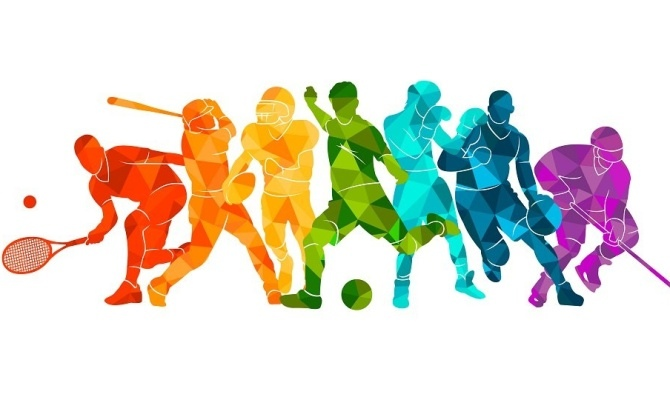

Vamos falar sobre alguns esportes!

Os esportes são uma parte vital da cultura global, servindo como um símbolo da aptidão física e da competição, mas também como uma fonte de saúde, lazer e união entre as pessoas. Variedades como o atletismo, o futebol e o basquete não são apenas atividades físicas, mas também eventos que unem pessoas de todas as origens.
A prática esportiva contribui significativamente para a saúde, reduzindo riscos de doenças e melhorando a qualidade de vida. Além disso, os esportes ensinam valores importantes como disciplina, trabalho em equipe e o manejo do fracasso, habilidades essas que são transferíveis para muitos outros aspectos da vida.
Eventos como as Olimpíadas e a Copa do Mundo de Futebol mostram como os esportes podem construir pontes entre culturas diferentes, promovendo a paz e a compreensão internacionais. Contudo, o mundo esportivo também enfrenta desafios como o doping e a corrupção, que ameaçam a integridade do esporte.
Em resumo, os esportes são mais do que competições: são ferramentas para o desenvolvimento pessoal e social, e mantêm um lugar insubstituível na sociedade moderna. Conforme avançamos, é essencial preservar os valores fundamentais do esporte enquanto nos adaptamos às novas tendências e desafios.